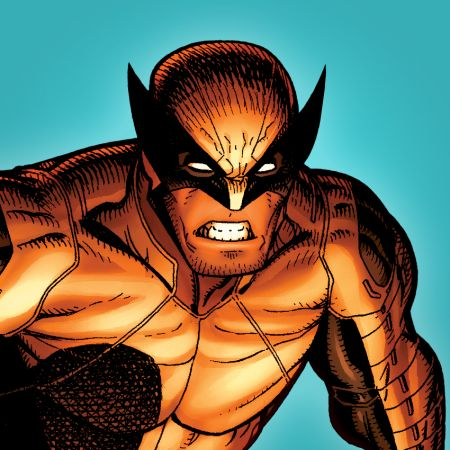

LOBEZNO

Lobezno, cuyo nombre real es James Howlett,
es un mutante canadiense que nació a finales del siglo XIX
en la familia Howlett. Sus poderes mutantes, como la curación
acelerada, sentidos agudizados, garras de hueso retráctiles y
la inserción de adamantium en su esqueleto, se manifestaron tras
un trauma infantil. Después de una vida errante como soldado,
mercenario y agente,
se unió a los X-Men, grupo con el que es más conocido.